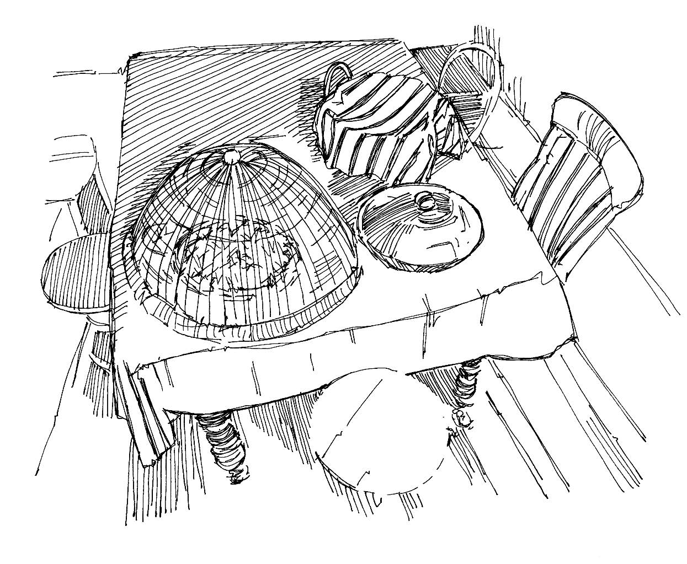

Food can carry or breed germs that spread disease and make people sick.
Germs in food that is not clean or is not covered can help spread diarrhoeal diseases (including cholera ) and other diseases such as hepatitis (A and E ), typhoid and anthrax .
What you need to know
Food that is not clean, covered and thoroughly cooked can contain germs that cause people to fall sick.
People in the community may not know or understand how food can be contaminated or how a disease can spread through food. It is important to explain the importance of good food hygiene so that people can protect themselves and their families from becoming sick.
Food hygiene
Wash hands with soap or ash before preparing food.
Cook all animal products thoroughly, including meat and eggs, to kill germs. Make sure that animal products are hot all the way through.
Cover food and water to protect them from dirt, flies, other insects and animals.
Wash utensils (plates, cutlery, etc.) with clean water and soap. Use a rack to dry dishes.
Wash vegetables and fruits thoroughly with clean water.
If you use firewood or charcoal to cook food, make sure that the room in which you cook is well ventilated.
Community messages
Wash hands with water and soap before you prepare food and before and after you eat.
Cooked food should always be stored properly and covered to keep out dirt, flies, other insects and animals.
All animal products, including meat and eggs, should be cooked thoroughly before eating, to kill all germs.
Vegetables should either be cooked thoroughly or washed well with water.
Raw fruits and vegetables should be washed with clean water.

Keep food properly stored and covered
Community messages
See the following community messages to support good food hygiene: